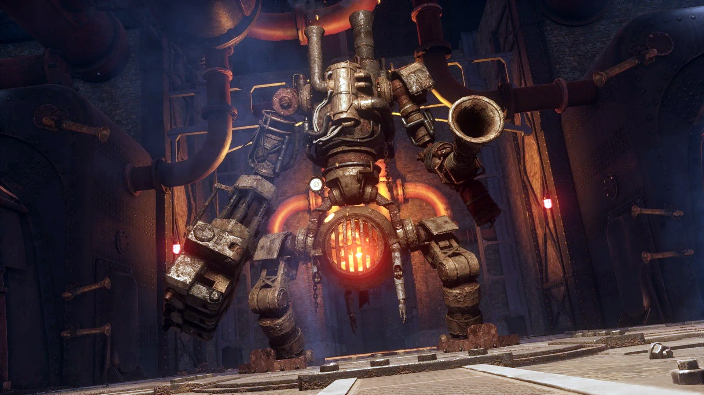
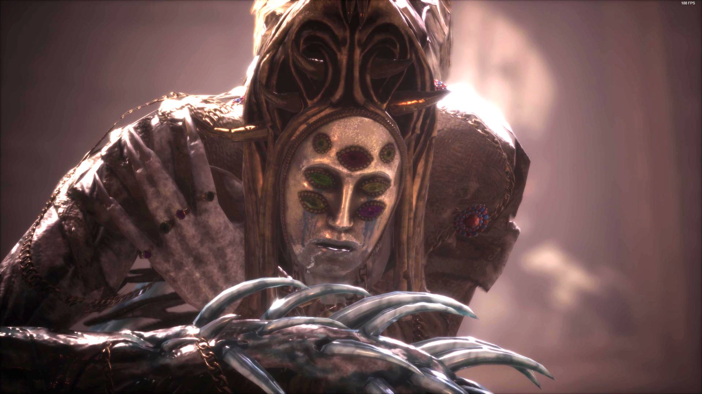
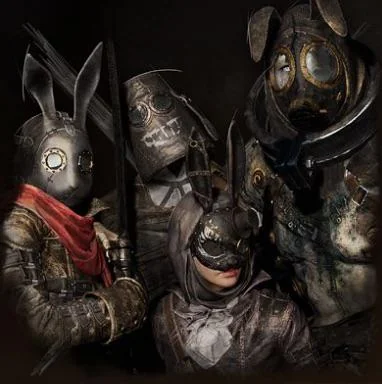
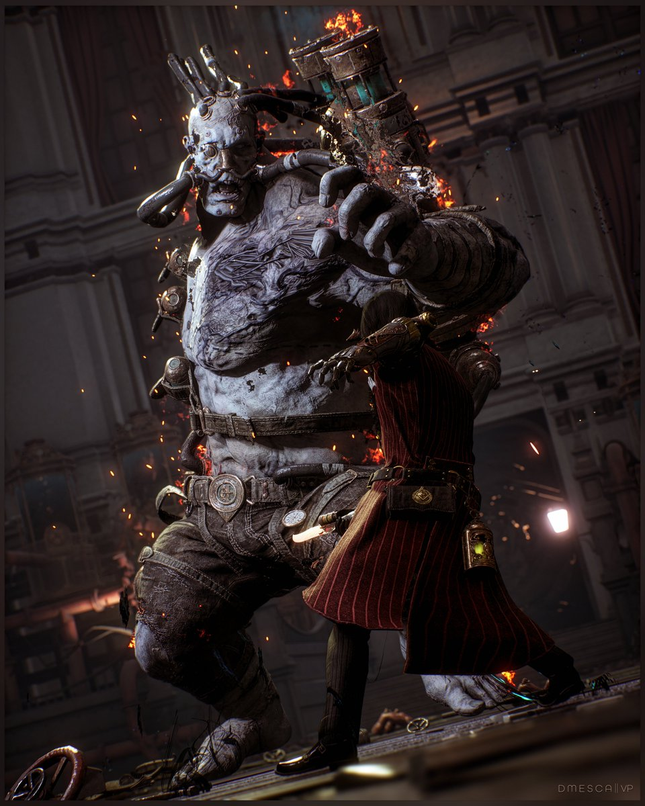

Main Bosses

Parade Master
The first terrifying puppet encountered in Krat.

Scrapped Watchman
A decommissioned police puppet wielding devastating electrical attacks.

King's Flame, Fuoco
A massive factory furnace puppet that engulfs its enemies in fire.

Fallen Archbishop Andreus
A grotesque monstrosity heavily mutated by the Petrification Disease.

Eldest of the Black Rabbit Brotherhood
The colossal leader of a notorious Stalker gang ruling the slums of Krat.

King of Puppets
The mysterious ruler behind the puppet frenzy.

Champion Victor
A hulking mass of muscle created by the Alchemists' twisted experiments.

Nameless Puppet
The final nightmare hidden beneath the truth.